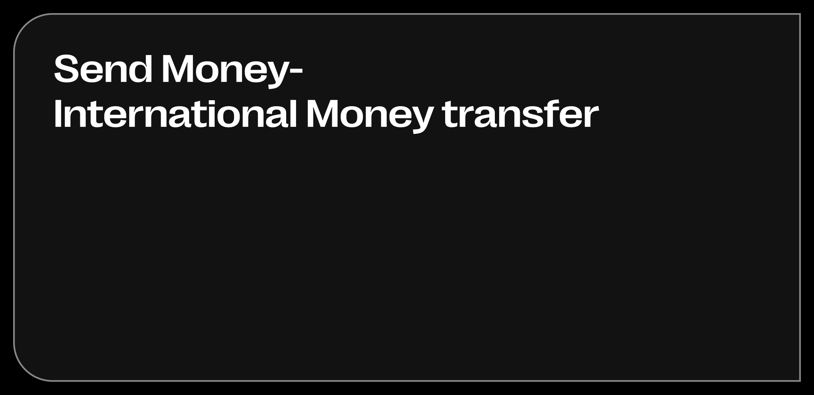

Send Money IMT
I redesigned the core international money transfer journey for Western Union — translating regulatory complexity and fee transparency into progressive disclosure that reduced perceived steps from 7 to 3. By building the flow around the user’s mental model (“I’m sending to Maria”) rather than corridor logic, I drove a +34% lift in end-to-end completion rate.

The redesigned transfer entry: contact-centric navigation built around the user’s mental model. Recent recipients, quick actions, and live rate visibility at the moment of highest intent.

The core innovation: a single screen consolidating amount entry, live currency conversion, payment method selection, fee transparency, and delivery time — eliminating 4 sequential screens from the previous flow.


7 validated payment method variants (bank account, PayID, debit card, in-store, retail) — each with consistent pricing container, CTA placement, and error handling built from the Nexus Design System.

Saved vs. new recipient toggle, card-based delivery options with fee and speed comparison. The tab pattern and information hierarchy are fixed across all markets; only the delivery options and pricing change.
The project began with analysis of 2.4M transfer sessions across the top 10 corridors, identifying 3 critical drop-off points: currency selection (12%), amount entry (43%), and payment method selection (28%). This data, combined with 24 moderated user interviews with diaspora communities in Australia, surfaced the key insight: users think in “person + amount” not “corridor + method.”
Three rounds of unmoderated usability testing (n=45) validated the progressive estimate model and iterated on keyboard dismissal, bottom sheet height, CTA states, and security notice placement. The final round achieved 92% task completion. Engineering handoff was delivered via Figma Dev Mode with 142 unique screens covering all variants and states across iOS and Android.